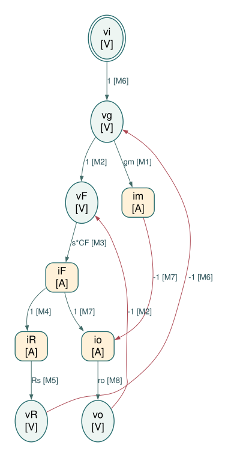
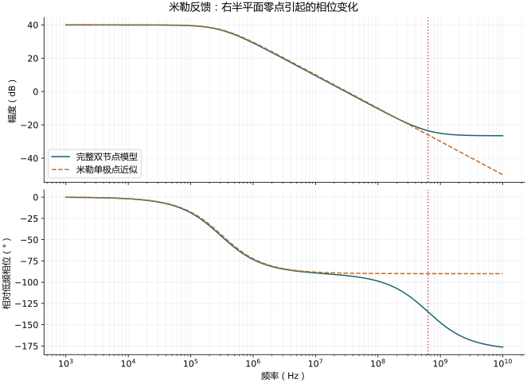

米勒电容：完整传输、反馈与右半平面零点
对应：0211、0212、0213。
独立 Physical / Causal SFG Markdown
A. 选取的 SFG 节点及选择理由
源极和衬底接交流地；输入串联 Rs，CF 跨接栅极与漏极，输出保留有限 ro，不添加 CL。iF 从栅极流向漏极，im 和 io 从漏极流向地，iR 从输入源流向栅极。ro = 1/go 只是同一输出电阻的参数换写，不另建 go 支路。
所有量为工作点附近的小信号，电容采用零初始条件的拉普拉斯关系。按局部器件关系选择因果方向，不预先求整体传递函数，也不消元为最少节点图。
| 节点 | 类型 | 选择理由 |
|---|---|---|
（vi） |
电压 / V | 独立输入电压。 |
（vg） |
电压 / V | 实际栅极电压，是跨导的控制量。 |
（vF） |
电压 / V | CF 两端电压，保留器件的差分控制量。 |
（im） |
电流 / A | MOS 跨导电流，保留电压到电流的器件方向。 |
（iF） |
电流 / A | CF 支路电流，同时参与两个节点的 KCL。 |
（iR） |
电流 / A | 输入电阻电流，由栅极 KCL 确定。 |
（vR） |
电压 / V | 输入电阻压降，由电流经 Rs 产生。 |
（io） |
电流 / A | 输出电阻 ro 的电流，由漏极 KCL 确定。 |
（vo） |
电压 / V | 输出电压，由 ro 将支路电流转换为电压。 |
B. 独立约束
每行是一个独立局部约束，整理为 。右侧的每一项生成一条边；一行分成多条边不等于重复使用约束。
| 约束 | 物理来源 | 定向方程 |
|---|---|---|
| M1 | MOS 跨导源的本构关系 | |
| M2 | CF 端电压定义（KVL） | |
| M3 | CF 的本构关系 | |
| M4 | 栅极 KCL | |
| M5 | Rs 的本构关系 | |
| M6 | 输入串联支路 KVL | |
| M7 | 漏极 KCL | |
| M8 | ro 的本构关系 |
电阻只使用 这一方向，不再同时添加 ；同一电容的支路电流可以出现在两端节点的 KCL 中，但其本构关系只建一次。 本图保留有限输出电阻以采用“电流 → 电压”的电阻方向。若另取输出电导严格为零的理想模型，应重新分配约束方向，不能直接在图上使用无穷大的电阻。
C. SFG edge list
E01: vg --(gm)--> im [M1]
E02: vg --(1)--> vF [M2]
E03: vo --(-1)--> vF [M2]
E04: vF --(s*CF)--> iF [M3]
E05: iF --(1)--> iR [M4]
E06: iR --(Rs)--> vR [M5]
E07: vi --(1)--> vg [M6]
E08: vR --(-1)--> vg [M6]
E09: iF --(1)--> io [M7]
E10: im --(-1)--> io [M7]
E11: io --(ro)--> vo [M8]
D. ASCII SFG
以下按目标节点分组绘制，重复出现的变量名指同一个节点；所有连接均列出。V 为电压节点，A 为电流节点。
vg --(gm)--> im [A] (M1)
vg --(1)---+
|
vo --(-1)--+--> vF [V] (M2)
vF --(s*CF)--> iF [A] (M3)
iF --(1)--> iR [A] (M4)
iR --(Rs)--> vR [V] (M5)
vi --(1)---+
|
vR --(-1)--+--> vg [V] (M6)
iF --(1)---+
|
im --(-1)--+--> io [A] (M7)
io --(ro)--> vo [V] (M8)

图中椭圆为电压节点，圆角矩形为电流节点，双边框为独立输入。每条边显示系数和约束编号；按图中箭头读取方向。
打开 SVG 矢量图 · DOT 连接文本 · 机器可读边表
{kind=link}
E. 主要正向通路与反馈环路
- 主要跨导通路：vi → vg → im → io → vo。漏极 KCL 对 im 取负号，因此这条通路反相。
- 电容前馈：vi → vg → vF → iF → io → vo。同一个 CF 电流在栅极流出、在漏极流入，两处 KCL 的符号必须一致。
- 输入电流引起的电阻压降环路：vg → vF → iF → iR → vR → vg，最后一条边为 −1。输出返回 CF 的路径 vo → vF → iF 再影响 io 及输入压降；这是局部物理约束的闭合，不是把电容方程及其反解重复使用。
F. 逐边对应独立约束检查
| 边 | 起点 → 终点 | 系数 | 唯一来源约束 |
|---|---|---|---|
| E01 | M1：MOS 跨导源的本构关系 | ||
| E02 | M2：CF 端电压定义（KVL） | ||
| E03 | M2：CF 端电压定义（KVL） | ||
| E04 | M3：CF 的本构关系 | ||
| E05 | M4：栅极 KCL | ||
| E06 | M5：Rs 的本构关系 | ||
| E07 | M6：输入串联支路 KVL | ||
| E08 | M6：输入串联支路 KVL | ||
| E09 | M7：漏极 KCL | ||
| E10 | M7：漏极 KCL | ||
| E11 | M8：ro 的本构关系 |
共 9 个节点、8 个独立约束、11 条边。每个非输入节点只有一个定义方程；每条边属于唯一约束。边系数仅含单个器件的本构参数（包括理想受控源的常数增益）、电容导纳或带符号的 1。
本节输出止于 Physical / Causal SFG，不进一步化为 algebraic SFG。
原有公式推导与必要近似（展开查看）
从实际连接出发
源极接地； 串在信号源与栅极之间； 跨接栅极与漏极；输出只有 ，不另加 。令 。
两个 KCL：
第二式中的 是从输入向输出的电容前馈，不能在米勒输入等效后遗失。
解出完整模型
二式消元：
定义 ：
零点在 ，位于右半平面。它在幅度上增加 dB/decade，却使相位再延迟 。 相对低频相位为
所以一个电容可以带来「一个极点加一个 右半平面 零点」的 相对延迟，并不代表有两个独立储能状态。
高频极限直接取最高端系数：
这个值是正的；低频反相、高频前馈同相。教材的正值增益图没有呈现固定的低频负号。
米勒输入等效与教材近似的每一步
对已知 ，电容输入电流
低频 ，所以 。 这是输入端口等效，不是把跨接电容删掉后的完整二端口等效。
| 步骤 | 原式 → 简式 | 条件与理由 | 失效例 |
|---|---|---|---|
| M1 | ，忽略相对 的 1 | 小增益 | |
| M2 | 且 ；分别压低 、 项 | 理想低阻信号源 | |
| M3 | 靠近零点时相位、增益均不对 | ||
| M4 | 很小 且小跨导 |
经 M2、M3 才得到
若要进一步把此 GBW 当交越频率，还须大增益及交越远低于零点。未作 M2 时， 仍含器件参数。
数值核对

图上同时画精确模型、米勒单极点近似与相对相位；频带逼近零点后，单极点近似的相位偏差会显现。
例图参数： mS、 kΩ、 kΩ、 pF。垂直虚线为 ；相位以低频反相值为基准。
来源对照
| 幻灯片 | PDF 页 | 书本页 | 讲解所在 PDF 页 |
|---|---|---|---|
| 0211 | 55 | 56 | 55 |
| 0212 | 55 | 56 | 55 |
| 0213 | 56 | 57 | 56 |
Spectre 仿真结果
本推导组的代表模型已完成 Spectre 验证；覆盖范围以所列网表为准，未逐一搭建所有幻灯片电路。
线性 AC 3 · MOS 电路 1 · 极零 1 · 瞬态 0：所列检查全部通过。
案例：miller、miller_low_rs、miller_high_rs、mos_miller、miller
{kind=link}
{kind=link}
{kind=link}